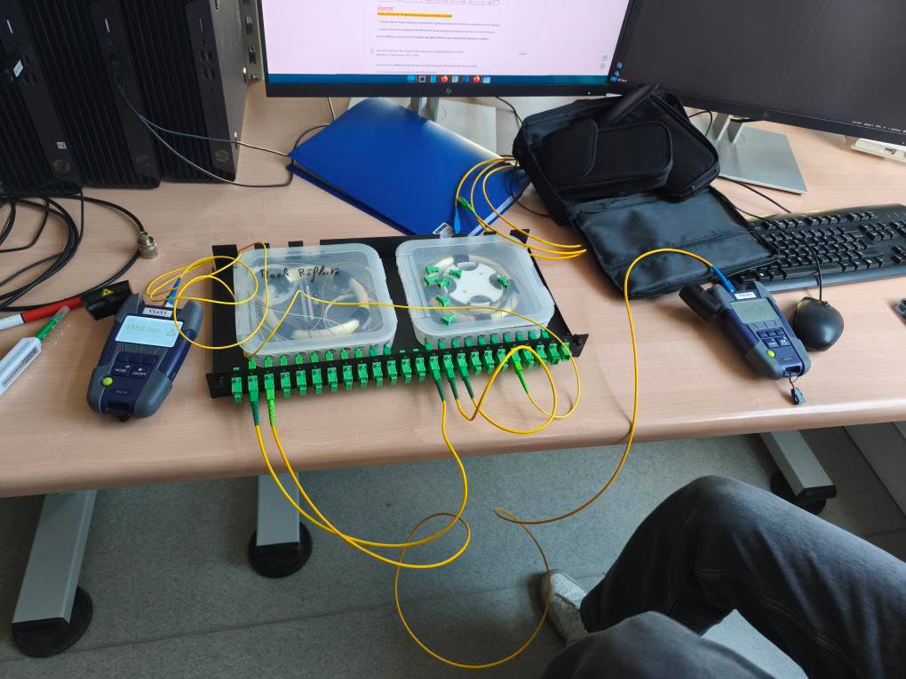
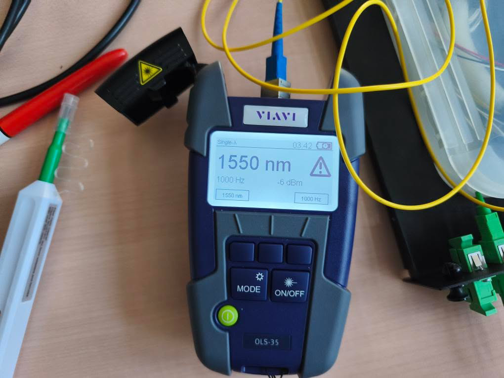
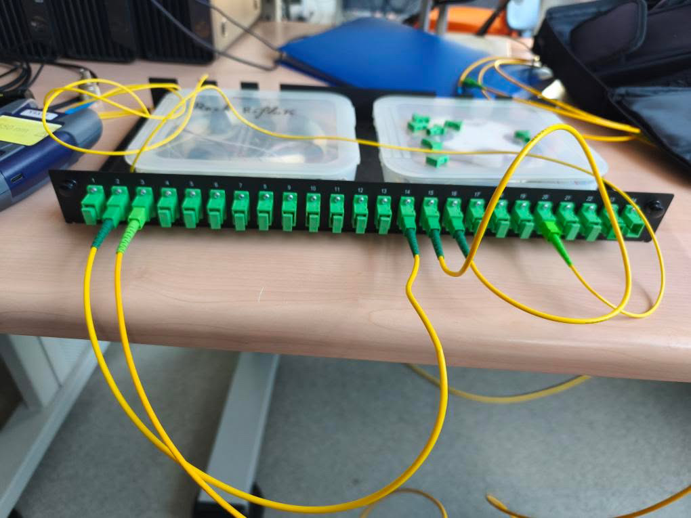
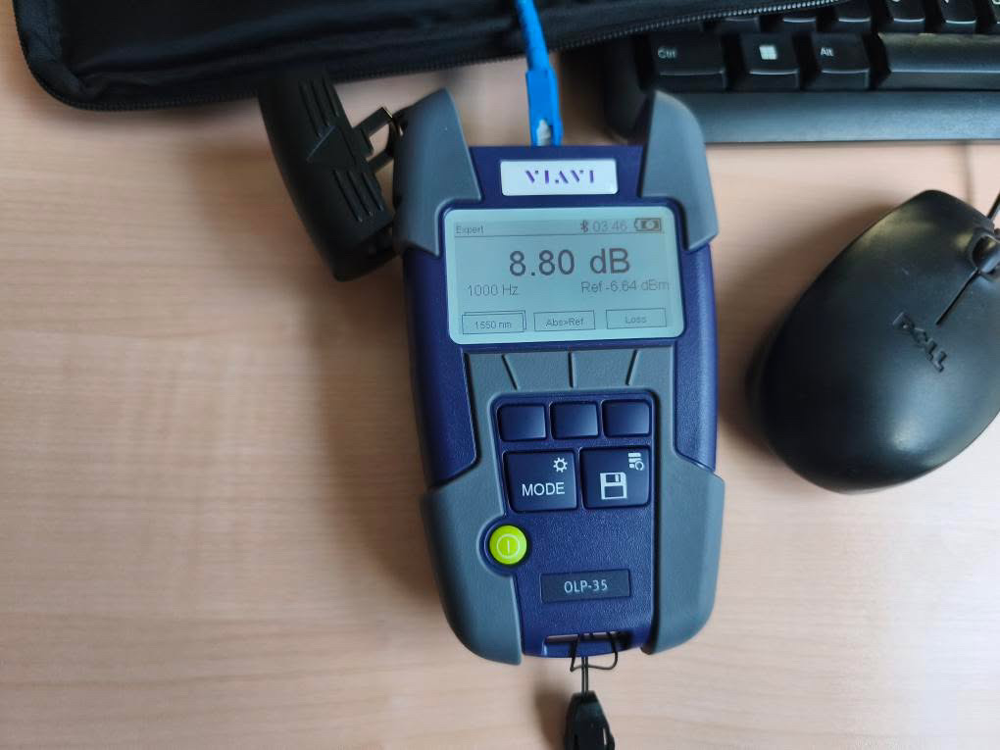

Cette SAÉ portait sur l'étude des supports physiques de transmission : le cuivre (câbles coaxiaux et Ethernet) et la fibre optique. L'objectif était de comprendre comment on mesure et qualifie ces supports dans un contexte professionnel. On a travaillé sur deux parties : des mesures de longueur et de Distance to Fault (DTF) sur câble coaxial et Ethernet à l'aide d'un analyseur DTF, d'un GBF et d'un oscilloscope, puis une mesure de photométrie sur une liaison fibre optique de type FTTH. À la fin, on devait rendre deux rapports de mesure (un pour le cuivre, un pour la fibre) et passer un QCM final.



À gauche : source laser VIAVI OLS-35 réglée sur 1550 nm. À droite : détail du câblage sur le tiroir optique GPON.

| Difficulté rencontrée | Ce que je ferais si c'était à refaire |
|---|---|
| Les calculs (NVP, dB, atténuation) étaient difficiles à assimiler, surtout les conversions entre dB et dBm. | Préparer une fiche avec toutes les formules clés et des exemples résolus avant les séances de TP, pour ne pas perdre de temps pendant les manips. |
| Le câblage de la liaison fibre sur le boîtier GPON : il fallait suivre précisément le schéma de connexion sans se tromper de port. | Prendre le temps de repérer tous les ports sur le tiroir physique avant de brancher, et vérifier chaque connexion une par une au lieu de tout câbler d'un coup. |
Cette SAÉ m'a fait comprendre concrètement comment fonctionnent les supports de transmission qu'on utilise tous les jours sans y penser. J'ai appris à mesurer la longueur d'un câble avec un analyseur DTF, à calculer la NVP d'un câble Ethernet, et surtout à qualifier une liaison fibre optique FTTH par photométrie. Ça m'a aussi montré l'importance de la rigueur dans les mesures : un connecteur mal nettoyé ou une calibration oubliée et les résultats sont faussés. Je me positionne à un niveau en cours d'acquisition : la partie pratique est comprise, mais les calculs théoriques (bilan optique, conversions dB) demandent encore du travail.